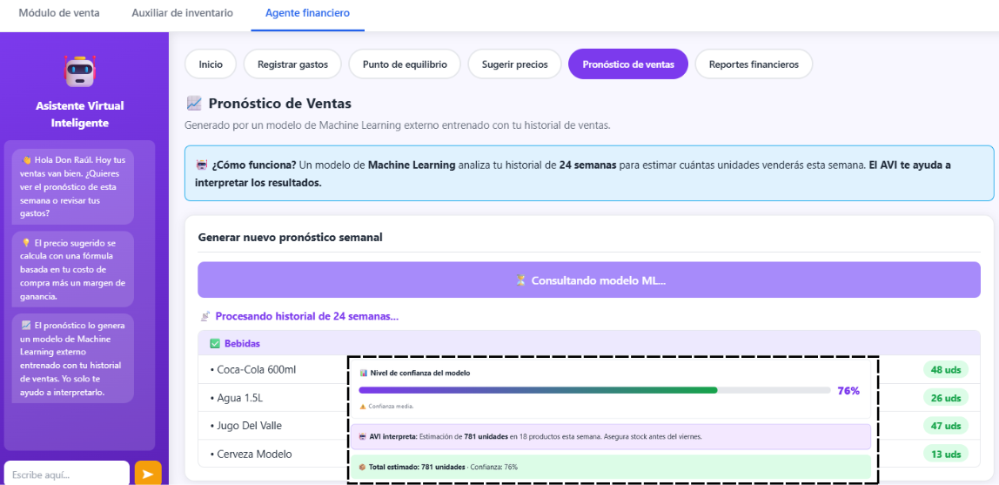

Virtual Assistant for Microenterprises
Graduation Project | Feb 2026 – Present | * Active Work in Progress *

Note: This project is currently in active development as part of my graduation requirements. The documentation below reflects the established architecture and the modules currently being implemented.
Small businesses in Mexico City often struggle with accessible, low-barrier tools to manage their daily operations. To address this, I am designing and implementing a digital assistant tailored specifically for microenterprises. The core focus is to provide a reliable, lightning-fast system featuring a dedicated sales module and an automated inventory tracking system.
Engineering Approach & Architecture
Unlike many modern assistants that rely heavily on complex Natural Language Processing (NLP) which can introduce latency and unpredictability, this project takes a structurally different approach to guarantee stability for business owners.
Backend Priority
I am architecting the backend logic from the ground up to streamline product management. By bypassing complex NLP layers for core transactions, the system ensures high reliability, deterministic outcomes, and extremely low latency for everyday users making quick sales.
Current Development Phase
The project is currently in the backend structuring phase. I am developing the relational database schemas to handle inventory logic, and building the API endpoints that will eventually connect the sales module to the user-facing interface.
Future Roadmap
As the backend infrastructure solidifies, the next phases will involve unit testing the sales module, integrating the frontend dashboard, and deploying the system to a cloud environment for controlled beta testing with local businesses.